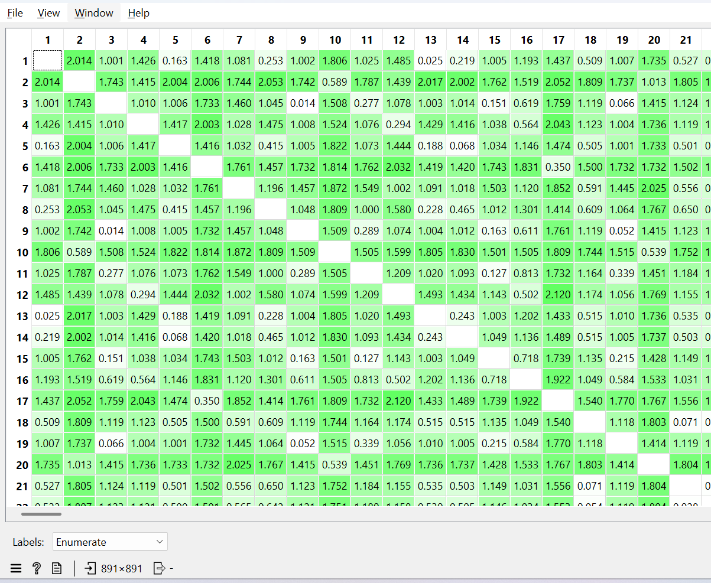

Mengukur Jarak Tipe Data Campuran#
Data Understanding#
Dataset Titanic merupakan dataset yang berisi informasi mengenai penumpang kapal RMS Titanic yang tenggelam pada tanggal 15 April 1912 setelah menabrak gunung es di Samudra Atlantik Utara. Dataset ini sering digunakan dalam bidang data mining dan machine learning untuk permasalahan klasifikasi, khususnya dalam memprediksi keselamatan penumpang.
Dataset yang digunakan dalam penelitian ini diperoleh dari platform Kaggle. Jumlah Dataset training Titanic ini adalah 891 data dan 12 atribut. Setaip baris merepresentasikan satu penumpang kala Titanic, sedangkan setiap kolom merepresentasikan atribut karakteristik dari penumpang tersebut.
Tujuan dataset ini adalah untuk memprediksi apakah seorang penumpang selamat (survived = 1) atau tidak selamat (survived = 0).
Dalam pembelajaran matakuliah Penambangan Data ini, dataset digunakan untuk menganalisis pengukuran jarak antar data yang memiliki tipe data campuran (numerik, kategorical, ordinal, dan biner).
Deskripsi Atribut#
Berikut merupakan atribut/fitur yang terdapat dalam dataset Titanic:
No |
Atribut |
Deskripsi |
|---|---|---|
1 |
PassengerId |
Nomor identitas penumpang |
2 |
Survived |
Status keselamatan (0 = Tidak selamat, 1 = Selamat) |
3 |
Pclass |
Kelas tiket (1 = Kelas atas, 2 = Kelas menengah, 3 = Kelas bawah) |
4 |
Name |
Nama lengkap penumpang |
5 |
Sex |
Jenis kelamin penumpang |
6 |
Age |
Usia penumpang |
7 |
SibSp |
Jumlah saudara/keseluruhan pasangan di kapal |
8 |
Parch |
Jumlah orang tua/anak di kapal |
9 |
Ticket |
Nomor tiket |
10 |
Fare |
Harga tiket |
11 |
Cabin |
Nomor kabin |
12 |
Embarked |
Pelabuhan keberangkatan (C = Cherbourg, Q = Queenstown, S = Southampton) |
Karakteristik Dataset#
Dataset memiliki tipe data yang campuran, yaitu :
Numerik (Age, Fare, SibSp, Parch)
Kategorical (Sex, Embarked)
Ordinal (Pclass)
Biner (Survived)
Teks (Name, Ticket, Cabin)
Missing Value dan Penanganan Missing Value#
Pada dataset Titanic ini terdapat missing value, terutama pada atribut:
Age
Cabin
Embarked
Berdasarkan hasil tahap data understanding, ditemukan bahwa dataset Titanic mengandung beberapa atribut yang memiliki nilai kosong (missing value). Keberadaan missing value dapat mempengaruhi proses analisis, terutama dalam perhitungan jarak antar data, karena metode distance seperti Euclidean atau Manhattan tidak dapat memproses nilai kosong (NaN). Oleh karena itu, diperlukan tahapan penanganan missing value sebelum dilakukan transformasi dan perhitungan jarak. Berikut adalah atribut yang teridentifikas memiliki missing value:
1. Age
Atribut age bertipe data numerik dan menunjukkan usia penumpang. Pada dataset Titanic ini ditemukan beberapa data yang tidak memiliki nilai usia.
Karena atribut ini bersifat numerik dan nantinya akan digunakan, maka missing value pada atribut age ini akan ditangani menggunakan metode imputasi median. Jadi, seluruh nilai kosong pada atribut age akan digantikan dengan nilai median dari atribut tersebut.
2. Embarked
Atribut Embarked merupakan atribut kategorical yang menunjukkan pelabuhan keberangkatan penumpang (C ,Q, atau S). Pada dataset Titanic terdapat beberapa data yang memiliki nilai kosong.
Karena atribut ini bersifat kategorikal, maka missing value ditangani menggunakan metode imputasi modus, yaitu menggantikan nilai kosong dengan kategori yang paling sering muncul dalam dataset.
3. Cabin
Atribut Cabin menunjukkan nomor kabin penumpang. Namun, atribut ini memiliki jumlah missing value yang sangat besar.
Karena missing value pada atribut ini sangat tinggi, maka atribut Cabin dihapus dari dataset dan tidak digunakan dalam proses analisis selanjutnya.
Seleksi Atribut untuk Perhitungan Jarak#
Seleksi atribut ini bertujuan untuk menentukan atribut - atribut yang relevan dan akan digunakan dalam proses perhitungan jarak antar data.
Atribut Yang Digunakan#
No |
Atribut |
Tipe Data |
Alasan Penggunaan |
|---|---|---|---|
1 |
Pclass |
Ordinal |
Merepresentasikan kelas sosial ekonomi penumpang (1, 2, 3) |
2 |
Sex |
Biner |
Mewakili jenis kelamin penumpang |
3 |
Age |
Numerik |
Menunjukkan usia penumpang |
4 |
Fare |
Numerik |
Mewakili harga tiket dan tingkat ekonomi |
5 |
Embarked |
Nominal |
Menunjukkan pelabuhan keberangkatan |
Atribut Yang Tidak Digunakan#
No |
Atribut |
Alasan Tidak Digunakan |
|---|---|---|
1 |
PassengerId |
Hanya sebagai identitas unik, tidak memiliki makna analitis |
2 |
Name |
Berupa teks panjang dan tidak relevan untuk pengukuran jarak |
3 |
Ticket |
Kombinasi huruf dan angka tanpa makna numerik langsung |
4 |
Cabin |
Memiliki banyak missing value dan telah dihapus |
5 |
Survived |
Merupakan label/target klasifikasi, bukan fitur untuk menghitung jarak |
Transformasi Data#
Transformasi ini bertujuan untuk mengubah seluruh atribut ke dalam bentuk numerik dan memiliki skala yang sebanding agar dapat digunakan dalam perhitungan jarak menggunakan metode Euclidean Distance.
Transformasi data terdiri dari dua tahap utama, yaitu encoding dan normalisasi.
Encoding Data Kategorical#
Encoding dilakukan untuk mengubah atribut yang bertipe kategorikal menjadi numerik.
Sex (Biner) :
Pada atribut Sex nilainya yaitu male dan female, ini diganti menjadi biner 0 dan 1 yang dimana male = 0 dan female = 1. Atribut ini menggunakan binary encoding karena hanya memiliki dua kategori.
Konversi Numerik:
male : 0
female : 1
Embarked (Nominal) :
Nilai asli pada atribut Embarked ini adalah S, C, Q kemudian di ganti menjadi nilai numerik 0, 1, 2. S = 0, C = 1, Q = 2.
Konversi Numerik:
S : 0
C : 1
Q : 2
Pclass (Ordinal) :
Atribut Pclass tidak diubah karena sudah berbentuk numerik (1, 2, 3) dan memiliki tingkatan yang jelas (ordinal).
1 : 1
2 : 2
3 : 3
Normalisasi Data Numerik#
Setelah semua atribut berbentuk numerik, dilakukan normalisasi agar setiap atribut memiliki rentang nilai yang sebanding. Hal ini penting karena perbedaan skala antar atribut dapat menyebabkan dominasi atribut tertentu dalam perhitungan jarak.
Pada dataset Titanic, atribut seperti Fare memiliki rentang nilai yang jauh lebih besar dibandingkan Age atau Pclass. Jika tidak dinormalisasi, atribut dengan nilai besar akan memberikan pengaruh yang lebih dominan dalam perhitungan Euclidean Distance.
Metode Normalisasi Min-Max Normalization#
Metode yang digunakan adalah Min-Max Normalization, yaitu metode yang mengubah nilai data ke dalam rentang 0 sampai 1.
Rumus normalisasi Min-Max adalah sebagai berikut:
Contoh perhitungan normalisasi :#
Karena M = 3
Pclass 1 :
Pclass 2 :
Perhitungan Jarak#
Setelah semua nilai atribut sudah berada pada rentang 0 sampai 1 maka siap digunakan dalam proses mengukur jarak. Normalisasi diperlukan agar atribut dengan skala besar tidak mendominasi atribut lain dalam proses pengukuran kedekatan data.
Setelah proses normalisasi selesai, langkah berikutnya adalah menghitung jarak antar data menggunakan metode Euclidean Distance. Metode ini mengukur jarak dua titik dalam ruang multidimensi berdasarkan akar dari jumlah kuadrat selisih tiap atribut.
Rumus Euclidean Distance dinyatakan sebagai berikut:
\(\begin{aligned} x_i & = \text{data ke-}i \\ x_j & = \text{data ke-}j \\ m & = \text{jumlah atribut} \\ x_{ik} & = \text{nilai atribut ke-}k \text{ pada data ke-}i \\ x_{jk} & = \text{nilai atribut ke-}k \text{ pada data ke-}j \end{aligned}\)
Contoh perhitungan manual#
Untuk perhitungan manual digunakan dua data sampel dari dataset Titanic yang telah melalui proses :
Imputasi missing value
Encoding atribut kategorical
Normalisasi Min-Max
Maka jarak antara data ke 1 dan data ke 2, dihitung dengan :
Langkah yang sama dilakukan untuk pasangan data lainnya, sehingga diperoleh matriks jarak berukuran 𝑛 × 𝑛 n×n, dengan 𝑛 n adalah jumlah data.
Maka akan didapatkan struktur matriks jarak :
Karakteristik matriks jarak yaitu :
dan
Hal ini menunjukkan bahwa jarak bersifat simetris dan jarak suatu data terhadap dirinya sendiri bernilai nol.
Implementasi menggunakan Orange#
Setelah perhitungan manual dilakukan, maka akan dilakukan pengimplementasian menggunakan orange untuk mengetahui hasil secara komputasional. Pada pengimplementasian orange ini mendapatkan matriks berukuran \(891 \times 891\).
